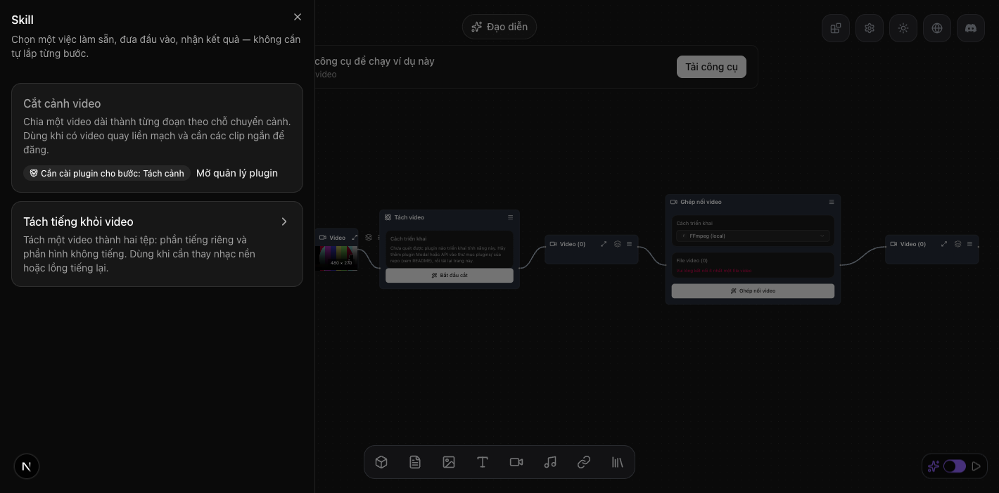

| Eval | Tiêu chí | Loại | Verdict | run_id | verified_at |
|---|---|---|---|---|---|
| E1 | AC-1 | test | PASS | minted-skill-system-v1-E1-r3 | 2026-09-16T21:05:00Z |
| E2 | AC-2 | test | PASS | minted-skill-system-v1-E2-r3 | 2026-09-16T21:05:00Z |
| E3 | AC-3 | test | PASS | minted-skill-system-v1-E3-r3 | 2026-09-16T21:05:00Z |
| E4 | AC-4 | test | PASS | minted-skill-system-v1-E4-r3 | 2026-09-16T21:05:00Z |
| E5 | AC-5 | test | PASS | minted-skill-system-v1-E5-r3 | 2026-09-16T21:05:00Z |
| E6 | AC-6 | test | PASS | minted-skill-system-v1-E6-r3 | 2026-09-16T21:05:00Z |
| E7 | AC-7 | test | PASS | minted-skill-system-v1-E7-r3 | 2026-09-16T21:05:00Z |
| E7b | AC-10 | test | PASS | minted-skill-system-v1-E7b-r3 | 2026-09-16T21:05:00Z |
| E8 | AC-8 | script | PASS | minted-skill-system-v1-E8-r3 | 2026-09-16T21:05:00Z |
| E9 | AC-9 | test | PASS | minted-skill-system-v1-E9-r3 | 2026-09-16T21:05:00Z |
| E9b | AC-9 | test | PASS | minted-skill-system-v1-E9b-r3 | 2026-09-16T21:05:00Z |
| E10 | AC-10 | test | PASS | minted-skill-system-v1-E10-r3 | 2026-09-16T21:05:00Z |
| E11 | AC-11 | test | PASS | minted-skill-system-v1-E11-r3 | 2026-09-16T21:05:00Z |
| E11b | AC-11 | test | PASS | minted-skill-system-v1-E11b-r3 | 2026-09-16T21:05:00Z |
| E12 | AC-9 | ui-check | PASS | minted-skill-system-v1-E12-r3 | 2026-09-16T21:05:00Z |
| E12b | AC-9 | ui-check | PASS | ssv1-luot.e12b-verify (PORT=3200, torn down) | 2026-09-16T21:05:00Z |
| E13 | AC-10 | ui-check | PASS | ssv1-luot.H21PVi (port 3142, torn down at end via scripts/skills/luot.sh tra) | 2026-09-16T21:05:00Z |
| E14 | AC-10 | script | BLOCKED | minted-skill-system-v1-E14-r3 | 2026-09-16T21:05:00Z |
| E16 | AC-12 | script | PASS | minted-skill-system-v1-E16-r3 | 2026-09-16T21:05:00Z |
| E17 | AC-13 | judgment | PASS | — | — |
| E17b | AC-13 | test | PASS | minted-skill-system-v1-E17b-r3 | 2026-09-16T21:05:00Z |
AC-1: Given mọi skill trong registry, When phép kiểm toàn vẹn chạy, Then mỗi skill có `id` trùng tên thư mục, `version` semver, `requires` bằng đúng tập slot của template, mọi `target` của tham số trỏ tới một nút dữ liệu đầu vào hoặc một ô cấu hình có thật của template, mọi `outputs[].from` là một cổng ra có thật, và chạy exporter thật trên `originalFlow` ra đúng `executable` đã lưu; phá từng luật trên một bản sao làm phép kiểm đỏ và nêu tên luật + tên skill.
Tests 21 passed (21) Start at 20:58:52 Duration 175ms (transform 80ms, setup 0ms, import 113ms, tests 6ms, environment 0ms)
AC-2: Given một skill có tham số bắt buộc, When `POST /api/skills/<id>/run` gửi thiếu tham số bắt buộc, sai kiểu, giá trị enum hay số ngoài khoảng, hoặc một khoá lạ, Then máy chủ trả 400 mã `SKILL_PARAMS_INVALID` liệt kê từng tham số kèm mã lý do thuộc tập đóng `required · type · range · option · unknown` (xuất từ `params.ts`), và bảng `tasks` không thêm hàng nào; đối chứng: tham số hợp lệ với plugin đủ trả 200 và thêm đúng một hàng.
Tests 7 passed (7) Start at 20:58:54 Duration 383ms (transform 83ms, setup 0ms, import 29ms, tests 286ms, environment 0ms)
AC-3: Given một template và bộ tham số hợp lệ, When instantiate chạy, Then template gốc không đổi, mỗi giá trị tham số xuất hiện ở cả `executable` lẫn `originalFlow`, mỗi node mang plugin mặc định đã cài của slot, và chạy exporter thật trên `instance.originalFlow` ra đúng `instance.executable` (bỏ `exportedAt`) — cho MỌI skill đã đăng ký.
Tests 4 passed (4) Start at 20:58:55 Duration 321ms (transform 170ms, setup 0ms, import 231ms, tests 5ms, environment 0ms)
AC-4: Given một slot của skill không có plugin nào cài, hoặc id skill không tồn tại, hoặc đang có 3 lượt chạy, When nộp lượt chạy, Then máy chủ trả lần lượt 400 `PLUGIN_NOT_INSTALLED` kèm tên slot, 404, 429 `CONCURRENT_TASK_LIMIT_EXCEEDED`, và không thêm hàng `tasks`.
Tests 5 passed (5) Start at 20:58:56 Duration 428ms (transform 84ms, setup 0ms, import 35ms, tests 312ms, environment 0ms)
AC-5: Given tham số hợp lệ và plugin đủ, When nộp lượt chạy, Then máy chủ trả `{taskId}` và hàng `tasks` tương ứng có `feature = "skill"`, `plugin_id` rỗng, `prompt` chỉ gồm `skillId`, `skillVersion`, `params` — không executable, không routing.
Tests 1 passed (1) Start at 20:58:54 Duration 392ms (transform 85ms, setup 0ms, import 30ms, tests 293ms, environment 0ms)
AC-6: Given một task skill đang chờ, When client mở `/api/task/wait` cho task đó, Then runner instantiate lại từ `prompt` và giao cho engine delegate đúng executable của instance; nếu `skillVersion` trong `prompt` khác version đang đăng ký thì task kết thúc `failed` với mã `SKILL_VERSION_CHANGED` mà không gọi engine.
Tests 2 passed (2) Start at 20:58:55 Duration 459ms (transform 143ms, setup 0ms, import 33ms, tests 344ms, environment 0ms)
AC-7: Given một task skill, When `GET /api/skills/runs/<taskId>`, Then trả trạng thái và `steps` — một phần tử `{nodeId, slot, status}` cho mỗi node của instance; khi xong, mọi bước `done` và `outputs` mang đúng các `key` của manifest với file key của engine; khi lỗi, bước có `nodeId` trong `tasks.error.failures` mang `failed`; task không phải skill hoặc không tồn tại trả 404.
Tests 6 passed (6) Start at 20:58:54 Duration 524ms (transform 156ms, setup 0ms, import 35ms, tests 396ms, environment 0ms)
AC-10: Given một lượt chạy đã nộp từ ngăn skill, When lượt đi qua đang chạy → xong hoặc → lỗi, Then ngăn hiện tiến trình theo từng bước (từ sự kiện SSE `NODE_*` khi đang mở, từ `steps` của `GET /api/skills/runs/<taskId>` khi mở lại), rồi kết quả với từng đầu ra theo nhãn manifest xem/tải được, hoặc câu lỗi bằng lời sản phẩm nêu tên bước hỏng kèm «Chạy lại» giữ nguyên tham số. (cross-layer)
Start at 20:58:56 Duration 499ms (transform 167ms, setup 0ms, import 29ms, tests 391ms, environment 0ms)
AC-8: Given không gian lượt có hai plugin cục bộ đã cài và video mẫu có tiếng, When chạy `tach-tieng-video` từ đầu tới cuối qua API thật, Then task kết thúc `completed` và mỗi đầu ra của manifest trỏ một tệp tồn tại, dung lượng > 0, đúng loại (âm thanh / video không tiếng).
PASS output tieng: 32720 bytes · audio=1 video=0 PASS output video-cam: 19018 bytes · audio=0 video=1 PASS e2e tach-tieng-video
AC-9: Given canvas đang mở, When người dùng bấm nút «Skill» ở thanh trái, Then ngăn skill liệt kê hai skill với tên và mô tả tiếng Việt; skill có slot không plugin nào cài (theo registry plugin thật qua `GET /api/skills`) mang nhãn «Cần cài plugin cho bước: <tên bước>» và không chạy được; chọn một skill hiện biểu mẫu sinh từ manifest với ô bắt buộc có dấu và nút «Chạy» chỉ bật khi đủ. (cross-layer)
Tests 3 passed (3) Start at 20:58:54 Duration 1.43s (transform 332ms, setup 0ms, import 792ms, tests 160ms, environment 404ms)
AC-9: Given canvas đang mở, When người dùng bấm nút «Skill» ở thanh trái, Then ngăn skill liệt kê hai skill với tên và mô tả tiếng Việt; skill có slot không plugin nào cài (theo registry plugin thật qua `GET /api/skills`) mang nhãn «Cần cài plugin cho bước: <tên bước>» và không chạy được; chọn một skill hiện biểu mẫu sinh từ manifest với ô bắt buộc có dấu và nút «Chạy» chỉ bật khi đủ. (cross-layer)
Tests 3 passed (3) Start at 20:58:54 Duration 602ms (transform 100ms, setup 0ms, import 25ms, tests 497ms, environment 0ms)
AC-10: Given một lượt chạy đã nộp từ ngăn skill, When lượt đi qua đang chạy → xong hoặc → lỗi, Then ngăn hiện tiến trình theo từng bước (từ sự kiện SSE `NODE_*` khi đang mở, từ `steps` của `GET /api/skills/runs/<taskId>` khi mở lại), rồi kết quả với từng đầu ra theo nhãn manifest xem/tải được, hoặc câu lỗi bằng lời sản phẩm nêu tên bước hỏng kèm «Chạy lại» giữ nguyên tham số. (cross-layer)
Tests 2 passed (2) Start at 20:58:55 Duration 1.39s (transform 339ms, setup 0ms, import 490ms, tests 485ms, environment 339ms)
AC-11: Given màn kết quả của một lượt, When bấm «Xem/sửa kế hoạch», Then canvas nhận đồ thị của instance với giá trị tham số hiển thị trong node; canvas đang có đồ thị thì hỏi xác nhận trước, và «Huỷ» để canvas nguyên như cũ. (cross-layer)
Tests 3 passed (3) Start at 20:58:55 Duration 1.26s (transform 278ms, setup 0ms, import 696ms, tests 160ms, environment 327ms)
AC-11: Given màn kết quả của một lượt, When bấm «Xem/sửa kế hoạch», Then canvas nhận đồ thị của instance với giá trị tham số hiển thị trong node; canvas đang có đồ thị thì hỏi xác nhận trước, và «Huỷ» để canvas nguyên như cũ. (cross-layer)
Tests 2 passed (2) Start at 20:58:56 Duration 390ms (transform 73ms, setup 0ms, import 28ms, tests 289ms, environment 0ms)
AC-9: Given canvas đang mở, When người dùng bấm nút «Skill» ở thanh trái, Then ngăn skill liệt kê hai skill với tên và mô tả tiếng Việt; skill có slot không plugin nào cài (theo registry plugin thật qua `GET /api/skills`) mang nhãn «Cần cài plugin cho bước: <tên bước>» và không chạy được; chọn một skill hiện biểu mẫu sinh từ manifest với ô bắt buộc có dấu và nút «Chạy» chỉ bật khi đủ. (cross-layer)
AC-9: Given canvas đang mở, When người dùng bấm nút «Skill» ở thanh trái, Then ngăn skill liệt kê hai skill với tên và mô tả tiếng Việt; skill có slot không plugin nào cài (theo registry plugin thật qua `GET /api/skills`) mang nhãn «Cần cài plugin cho bước: <tên bước>» và không chạy được; chọn một skill hiện biểu mẫu sinh từ manifest với ô bắt buộc có dấu và nút «Chạy» chỉ bật khi đủ. (cross-layer)

AC-10: Given một lượt chạy đã nộp từ ngăn skill, When lượt đi qua đang chạy → xong hoặc → lỗi, Then ngăn hiện tiến trình theo từng bước (từ sự kiện SSE `NODE_*` khi đang mở, từ `steps` của `GET /api/skills/runs/<taskId>` khi mở lại), rồi kết quả với từng đầu ra theo nhãn manifest xem/tải được, hoặc câu lỗi bằng lời sản phẩm nêu tên bước hỏng kèm «Chạy lại» giữ nguyên tham số. (cross-layer)
AC-10: Given một lượt chạy đã nộp từ ngăn skill, When lượt đi qua đang chạy → xong hoặc → lỗi, Then ngăn hiện tiến trình theo từng bước (từ sự kiện SSE `NODE_*` khi đang mở, từ `steps` của `GET /api/skills/runs/<taskId>` khi mở lại), rồi kết quả với từng đầu ra theo nhãn manifest xem/tải được, hoặc câu lỗi bằng lời sản phẩm nêu tên bước hỏng kèm «Chạy lại» giữ nguyên tham số. (cross-layer)
FAIL: dev server never served the proto route on port 3198 within 300s
AC-12: Given commit thêm skill `tach-tieng-video`, When đối chiếu các đường dẫn commit đó chạm, Then chỉ gồm `src/lib/skills/tach-tieng-video/**`, đúng một dòng thêm trong `src/lib/skills/registry.ts`, và `src/i18n/messages/**` — không dòng nào trong `src/lib/workflow/**`, `src/lib/director/**`, `src/lib/task/**`, `src/app/api/**`, `sdk/**`; tại commit cha của commit đó, phép kiểm toàn vẹn và instantiate xanh với registry chưa có skill thứ hai; tại HEAD, không tệp nào ngoài `src/lib/skills/tach-tieng-video/` và i18n nhắc chuỗi `tach-tieng-video`, `extract-audio`, `remove-video-audio` trong `src/lib/skills/*.ts`, `src/lib/task/**`, `src/app/api/**`, `src/lib/workflow/**`; một bản sao có thêm một đường ngoài danh sách, hoặc một nhánh theo id skill trong runner ở commit trước, làm phép đối chiếu đỏ và nêu đường dẫn đó.
ok parent commit adds a runner branch for the skill (red: FAIL no-special: src/lib/task/runner.ts:2:if (skillId === "tach-tieng-video") { /* special */ })
note frame-before is not re-run here (needs the full app); it runs in the plain mode
TEETH PASS 5/5
AC-13: Given ngăn skill ở mọi trạng thái trong bảng trạng thái của thiết kế, When người bán hàng không rành kỹ thuật đọc, Then tên, mô tả, nhãn, thông báo lỗi nói bằng lời sản phẩm, không lộ từ nội bộ (slot, plugin id, ABI, executable, taskId).
Phán đoán: Cả ba lens đều chấm PASS, đồng thuận không có dissent. - domain-correctness: PASS — Mọi trạng thái ngăn skill trong bằng chứng (danh sách thường/thiếu-plugin, biểu mẫu thường/lỗi tham số/bận, kết quả xong/lỗi) đều dùng tên và câu tiếng Việt theo lời sản phẩm — "Cắt cảnh video", "Tách cảnh", "Lấy phần tiếng", "Không xử lý được đầu vào này ở bước «Bỏ tiếng khỏi hình»", "Cần cài plugin cho bước: Tách cảnh" — không xuất hiện slot id, plugin id thô, ABI, executable hay taskId, khớp với các chuỗi tương ứng trong vi.json (Skills.*). Các nhãn kỹ thuật như "PySceneDetect (local)"/"FFmpeg (local)" chỉ xuất hiện trên canvas nền phía sau, ngoài phạm vi "ngăn skill" mà AC-13 hỏi. - operational-feasibility: PASS — Toàn bộ chuỗi vi.json cho namespace Skills và 5 ảnh chụp (danh sách, thiếu plugin, biểu mẫu lỗi tham số, biểu mẫu bận, kết quả lỗi) đều dùng lời sản phẩm thuần Việt — tên, mô tả, nhãn bước, thông báo lỗi (vd. "Nhập số từ 5 đến 60.", "Không xử lý được đầu vào này ở bước «Bỏ tiếng khỏi hình»", "Việc làm sẵn này vừa được cập nhật...") — không nơi nào lộ slot id, plugin id, ABI, executable hay taskId. Từ "plugin" xuất hiện nhưng ở dạng chung ("Cần cài plugin cho bước: …"), không phải "plugin id" — nằm ngoài danh sách từ cấm mà AC-13 liệt kê cụ thể. - spec-alignment: PASS — Cả các trạng thái ngăn skill trong bằng chứng (danh sách, thiếu plugin, biểu mẫu + lỗi tham số, đang chạy, kết quả xong, kết quả lỗi, bận) đều dùng lời sản phẩm thuần Việt — "Cần cài plugin cho bước: Tách cảnh", "Không xử lý được đầu vào này ở bước «Bỏ tiếng khỏi hình»", "Đang có 3 lượt chạy cùng lúc…", "Nhập số từ 5 đến 60" — không thấy từ nội bộ slot/plugin id/ABI/executable/taskId lộ ra ở bất kỳ đâu. vi.json xác nhận cùng nội dung cho các key liên quan (Skills.*, errors.*), khớp với các ảnh chụp.
AC-13: Given ngăn skill ở mọi trạng thái trong bảng trạng thái của thiết kế, When người bán hàng không rành kỹ thuật đọc, Then tên, mô tả, nhãn, thông báo lỗi nói bằng lời sản phẩm, không lộ từ nội bộ (slot, plugin id, ABI, executable, taskId).
Tests 4 passed (4) Start at 20:59:02 Duration 202ms (transform 73ms, setup 0ms, import 91ms, tests 18ms, environment 0ms)